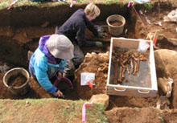
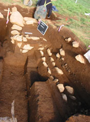
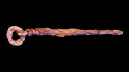
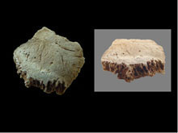

Archaeological Field Work | 2002 Field Season - Churchyard and Cremation
The excavations during the 2002 field season had many exciting results. Work at Kirkjuhóll verified the presence of a cemetery containing skeletons buried in Christian fashion at the site. The foundations of several early structures were also discovered.
One of these structures appears to be a conversion period wooden stave church. We also found the remains of a turf structure. This suggests that several phases of building occurred at the site.
The mound at Kirkjuhóll contains turf walls with the Landnám ash layer, human skeletons buried in a Christian fashion, and the remains of what appears to be a wood stave church from the early Christian period.
This is indicated by the parallel arrangement of foundation stones seen in the photograph to the right and the traces of wood that are associated with these stones.
Artifacts discovered in the Kirkjuhóll cemetery included a Viking Age iron ring pin and a worked piece of whalebone with a series of lines cut into its surface.
Excavations at Huldahóll resulted in the recovery of additional fragments of cremated human bone.
This is an important discovery because it provides the first evidence that the early settlers of Iceland practiced cremation. These bones were found together with cremated animal bones, wood ash, charcoal, and fragments of metal artifacts.
These remains are in a mound that is partially of human construction. A radiocarbon date on a charred twig associated with these remains indicates that the cremated bones likely date to the tenth century.
The mound in which the cremated human remains were found is about 40 meters from a second mound called Kirkjuhóll.
 Jacqueline Eng and Patricia Lambert excavating burials at Hrísbrú.
 Foundations of the wooden stave church discovered at Kirkjuhóll.
 A Viking age ring pin from the Hrísbrú cemetery.  Cremated human bone from the Hulduhóll burial mound.